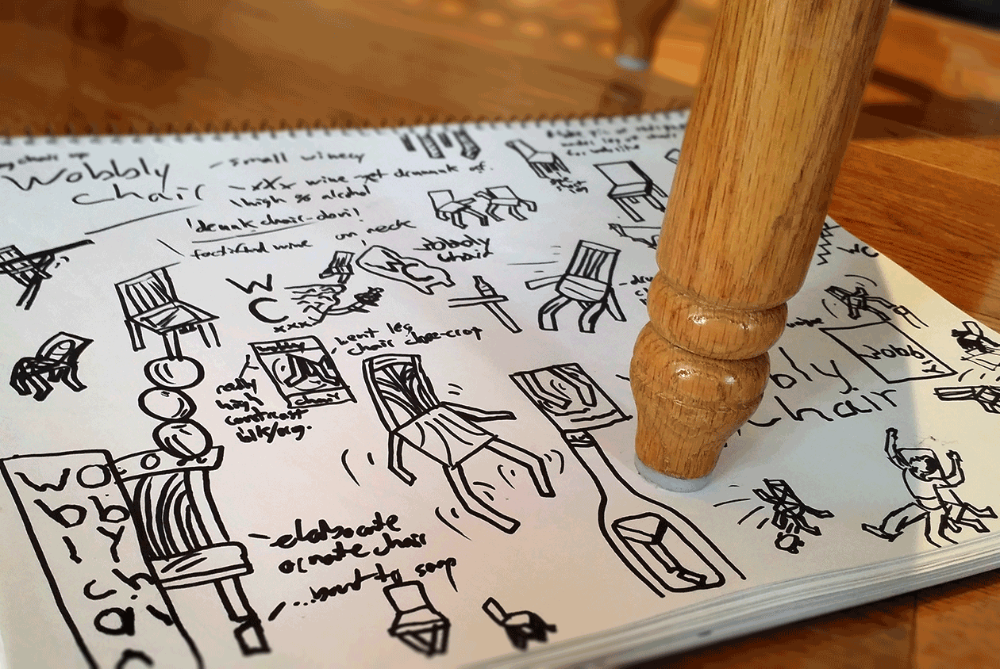

Wobbly Chair

XXX fortified wine peddlers Wobbly Chair needed a logo as intoxicating as their red wine, you might want to sit down for this
Requirements:
make it sloppy, needs a chair, allude to the strength of the wine
Roughs
Giving the chair some humanesque features, like standing up-right and bendy appendages, helped in making an otherwise inanimate object look drunk as hell
Digi Roughs
The logo needed to have a rough, hand-drawn look like it was drunkenly scrawled on a bar napkin after a couple too many
Final
Red red wine you make me feel so fine!